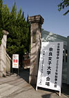

中村研ニュース（2006年度）
応用物理学会春季第54回学術講演会で登壇［2007年3月］
3月27日（火）から30日（金）まで，応用物理学会2007年春季第54回学術講演会が青山学院大学（相模原キャンパス）で開催され，29日に中村が登壇しました。講演のタイトルは「液体キセノンの発光スペクトルの測定-2」で，本研究室が進めている液体キセノンシンチレータの発光スペクトルの測定実験に関して 最近の進展について発表を行ないました。
日本物理学会2007年春季大会で登壇［2007年3月］
3月25日（日）から28日（水）まで，日本物理学会2007年春季大会（宇宙線・宇宙物理領域）が首都大学東京で開催され，26日に中村が登壇しました。講演のタイトルは「宇宙線中の超重核観測計画5 -高性能固体飛跡検出器の開発現状2」で，本研究室が進めている高感度なガラス飛跡検出器BP-1の研究開発に関して 最近の進展について発表を行ないました。
修士生３名と学部生４人が無事に修了・卒業［2007年3月］
 3月23日（金）に修了式・卒業式が行なわれ，中村研も修士生３名と学部生４人が無事に修了・卒業しました。修了・卒業したメンバーは次の通りで，それぞれ，就職もしくは進学をします。
3月23日（金）に修了式・卒業式が行なわれ，中村研も修士生３名と学部生４人が無事に修了・卒業しました。修了・卒業したメンバーは次の通りで，それぞれ，就職もしくは進学をします。
- 修士修了
- 尾崎 雄一，倉田 真吾，長瀬 達洋
- 学部卒業
- 浦山 健太，木村 文陽，佐藤 友厚，宮本 健司
応用物理学会放射線分科会第22回固体飛跡検出器研究会で講演［2007年3月］
3月23日（金），24日（土）に，応用物理学会放射線分科会第22回固体飛跡検出器研究会が放射線医学総合研究所（千葉市稲毛区穴川）で開催され，23日に中村も講演を行ないました。講演のタイトルは「BP-1ガラス飛跡検出器の特性と応用」で，高感度なガラス飛跡検出器BP-1に関して本研究室が最近に進めている研究について発表を行ないました。
学部４年の宮本健司が第２回ナノテク交流シンポジウムで発表［2007年3月］
3月8日（木）に第２回ナノテク交流シンポジウム（本学と横浜市立大学との共催）が横浜市立大学（金沢八景キャンパス）で 開催され，中村研の４年の宮本健司がポスター発表を行ないました。発表のタイトルは「BP-1ガラスマルチコリメータを用いたX線CCDの電荷雲測定」で，本研究室が 理化学研究所の平賀純子博士等と共同で研究を進めているBP-1ガラス製の超微細Ｘ線コリメータを用いた Ｘ線CCDの電荷雲の測定実験の最新結果とその応用について発表しました。
中村研ＯＢの小田晋太郎氏が来訪［2007年3月］
3月7日（水）に中村研ＯＢの小田晋太郎氏（知物第１期生／現：古野電気）が リクルータも兼ねて来訪され， 有意義な話を伺うことができました。「ガスカウンター及びシンチレーションカウンターの基礎と応用に関するシンポジウム」で講演［2007年3月］
3月2日（金）に「ガスカウンター及びシンチレーションカウンターの基礎と応用に関するシンポジウム」が早稲田大学理工学部大久保キャンパスで開催され，中村も液体キセノンに関する研究成果の講演を行ないました。講演のタイトルは「液体キセノンシンチレータの光学的性質の測定」で，液体キセノンの屈折率の高精度な測定結果と，シンチレーションの発光スペクトルの測定実験計画について報告を行ないました。
院生・学部生の有志がスキー旅行に［2007年2月］
院生・学部生の有志が，2月22日（木）から24（土）まで北信にスキー旅行に行きました。今年は雪が多くはなかったようですが，皆，怪我もなくスキーやスノーボードを楽しんできました。学部４年の４人の学部生が卒論発表会で発表［2007年2月］
2月20日（火）に工学部知能物理工学科の卒論発表会が開かれ，中村研の学部４年の４人の学部生が発表を行ないました。博士前期課程２年の３人の院生が修論発表会で発表［2007年2月］
2月14日（水）に工学府物理情報工学専攻物理工学コースの修論発表会が開かれ，中村研の博士前期課程２年の ３人の院生が発表を行ないました。学部４年の宮本健司が学内の特別教育研究高度化経費報告会で発表［2007年2月］
2月9日（金）に特別教育研究高度化経費報告会（本学と横浜市立大学との共催）が本学共同研究推進センターで開催され， 中村研の４年の宮本健司が発表を行ないました。発表のタイトルは「BP-1ガラスマルチコリメータを用いたX線CCDの電荷雲測定」で，本研究室が 理化学研究所の平賀純子博士等と共同で研究を進めているBP-1ガラス製の超微細Ｘ線コリメータを用いた Ｘ線CCDの電荷雲の測定実験の最新結果とその応用について発表しました。
中村研ＯＢの橋本安章氏が来訪［2007年2月］
2月2日（金）に中村研ＯＢの橋本安章氏（知物第２期生／現：富士ゼロックス） が来訪され，有意義な話を伺うことができました。学部４年の宮本健司が「放射線検出器とその応用」研究会で講演［2007年2月］
2月1日（木）に第21回「放射線検出器とその応用」研究会（高エネルギー加速器研究機構放射線科学センターと応用物理学会・放射線分科会 並びに東京大学工学部原子力工学研究施設・弥生研究会との共催）が高エネルギー加速器研究機構（つくば）で開催され，中村研の４年の宮本健司が講演を行ないました。講演のタイトルは「BP-1ガラス製マルチコリメータを用いたX線CCDの電荷雲測定」で，本研究室が理化学研究所の平賀純子博士等と共同で研究を進めているBP-1ガラス製の 超微細Ｘ線コリメータを用いたＸ線CCDの電荷雲の測定実験の最新結果について発表しました。
BP-1ガラス製マルチコリメータを用いたＸ線CCDの電荷雲の形状測定に成功！［2007年1月］
中村研は，理化学研究所の平賀博士と共に自ら発明したBP-1ガラスマルチコリメータを用いてＸ線CCDのR&Dを行なっていますが，このたび， 中村研の博士課程前期２年の尾崎雄一が研究の中心となって，BP-1ガラスマルチコリメータを実際に用いてＸ線CCD中の電荷雲の形状を測定することに 初めて成功しました。穴がランダムに位置するコリメータを用いた実測は世界初で，これにより，海外出願中の特許が実現可能であることを完全に証明した ことになります。今後は，コリメータの性能を上げ，Ｘ線CCDの電荷雲の測定精度の向上を目指すことによって，エネルギーの高い硬Ｘ線について 測定を行なう予定です。
博士前期２年の倉田真吾の研究が"放医研NEWS"に掲載［2007年1月］
独立行政法人放射線医学総合研究所の"放医研NEWS"の１月号において，HIMAC REPORTとして中村研の博士前期２年の倉田真吾の研究が掲載されました。タイトルは「重イオンCTの開発で変換式の精度を検証」で，放医研の金井達明博士の下で医学物理に関する基礎的な研究を行なっています。なお，倉田真吾は2006年秋より放医研の大学院課程研究員に採用されています。東京大学宇宙線研究所 共同利用研究成果発表会で講演［2006年12月］
2月15日（金），16日（土）に，東京大学宇宙線研究所の共同利用研究成果発表会が東京大学宇宙線研究所（柏キャンパス）で開催され，中村も成果の発表を依頼されて講演を行ないました。講演のタイトルは「液体キセノンの発光スペクトル」でしたが，今年は初めて講演を依頼されたため，研究の背景の説明も兼ねて前年度までの２年間に実施した液体キセノンの屈折率測定実験の成果についても報告を行ないました。神岡で液体キセノン検出器を用いた宇宙暗黒物質探索［2006年11・12月］
11月中旬から12月下旬まで，東京大学宇宙線研究所神岡宇宙素粒子研究施設（岐阜県神岡鉱山）において液体キセノン検出器を用いた宇宙暗黒物質探索実験のデータ取得が行われ，当研究室は中村と院生が現地で参加しました。液体キセノンの量は約100kgとキセノンを用いた直接探索では世界最大級で，世界最高レベルの高感度での暗黒物質探索です。Ｘ線天体の観測を目指すＸ線偏光計のテスト実験に参加［2006年10・11月］
 10月下旬から11月上旬まで，理化学研究所の牧島宇宙放射線研究室の玉川グループが高エネルギー加速器研究機構の放射光施設で約１週間行なったＸ線偏光計のテスト実験に，中村，院生および４年生が参加し，全面的に協力しました。中村研は，理化学研究所の平賀博士と共に自ら発明したBP-1ガラスマルチコリメータを用いてＸ線CCDのR&Dを行なっていますが，この研究にも参考になる点が多いことから，両研究は相まってＸ線検出技術を強力に推進し将来のＸ線天文学に貢献することが期待されます。
10月下旬から11月上旬まで，理化学研究所の牧島宇宙放射線研究室の玉川グループが高エネルギー加速器研究機構の放射光施設で約１週間行なったＸ線偏光計のテスト実験に，中村，院生および４年生が参加し，全面的に協力しました。中村研は，理化学研究所の平賀博士と共に自ら発明したBP-1ガラスマルチコリメータを用いてＸ線CCDのR&Dを行なっていますが，この研究にも参考になる点が多いことから，両研究は相まってＸ線検出技術を強力に推進し将来のＸ線天文学に貢献することが期待されます。
ソフトボール大会で中村研チームが準優勝［2006年11月］
11月2日 毎年恒例の知能物理工学科ソフトボール大会に於いて、今年は中村研のチームが準優勝しました。決勝戦は水口研チームと戦い、惜しくも優勝は逃したものの、好試合が展開されました。<<さらに詳しく>>
 9月15日 中村研出身で現在、富山大学人間発達科学部助教授の高橋純氏が本を出版されました。
9月15日 中村研出身で現在、富山大学人間発達科学部助教授の高橋純氏が本を出版されました。日本物理学会2006年秋季大会で登壇［2006年9月］
9月20日（水）から23日（土）まで、日本物理学会2006年秋季大会（宇宙線・宇宙物理領域）が奈良女子大で開催され、当研究室は中村と院生２名が登壇しました。登壇者と講演のタイトルは次の通りです。- 9月20日 萩原 宙樹「液体キセノンの発光スペクトルの測定」
- 9月22日 尾崎 雄一「BP-1ガラス製マルチコリメータを用いたX線CCDの詳細診断」
- 9月23日 中村 正吾「宇宙線超重核観測のためのBP-1ガラス飛跡検出器の感度と製法の研究」
応用物理学会 秋季第67回学術講演会で登壇［2006年8月］
8月29日（火）から 9月1日（金）まで，応用物理学会2006年秋季第67回学術講演会が立命館大学で開催され，当研究室は中村と院生２名が登壇しました。 登壇者と講演のタイトルは次の通りです。- 8月29日 長瀬 達洋「液体キセノンの屈折率の精密測定」
- 8月30日 亀井 拓也「BP-1ガラス飛跡検出器の感度と製法の研究」
- 9月１日 中村 正吾「液体キセノンの発光スペクトルの測定」